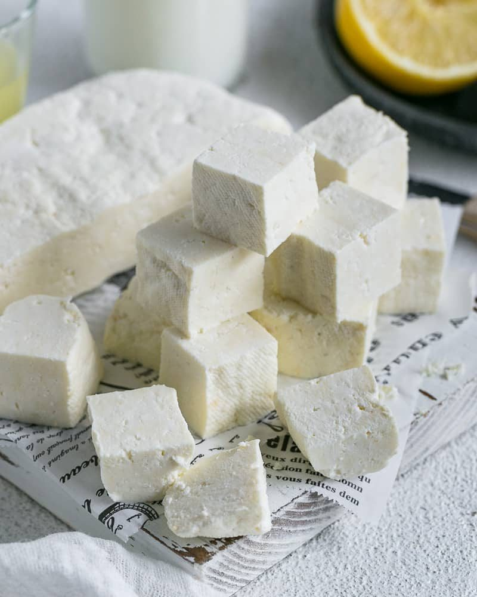

Paneer

Paneer is a fresh cheese commonly used in Indian cuisine. It is made by curdling milk with an acid like lemon juice or vinegar and then draining the whey.
Ingredients:
- Milk
- Acid (lemon juice or vinegar)
- Spices (cumin, coriander, turmeric, chili powder)
Steps:
- Heat milk in a pan until it starts to boil.
- Remove from heat and add the acid. Stir gently.
- Let it sit for a few minutes until curds form.
- Strain the mixture through a cheesecloth to separate the curds from the whey.
- Press the curds to remove any excess moisture.
- Cut the paneer into cubes and set aside.
Home